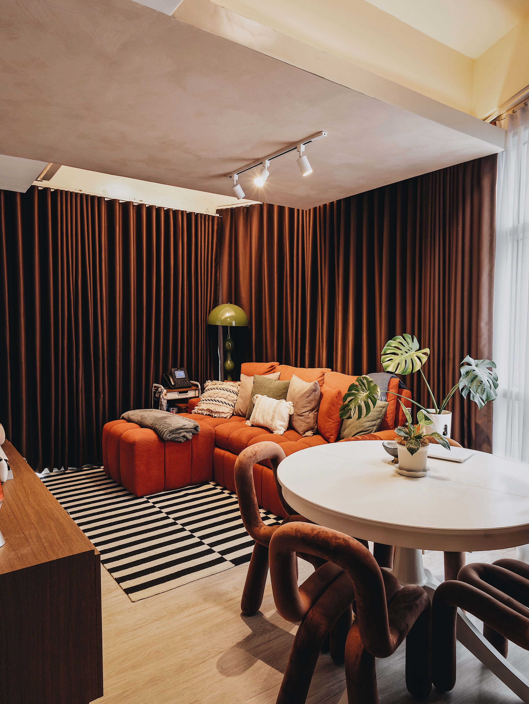
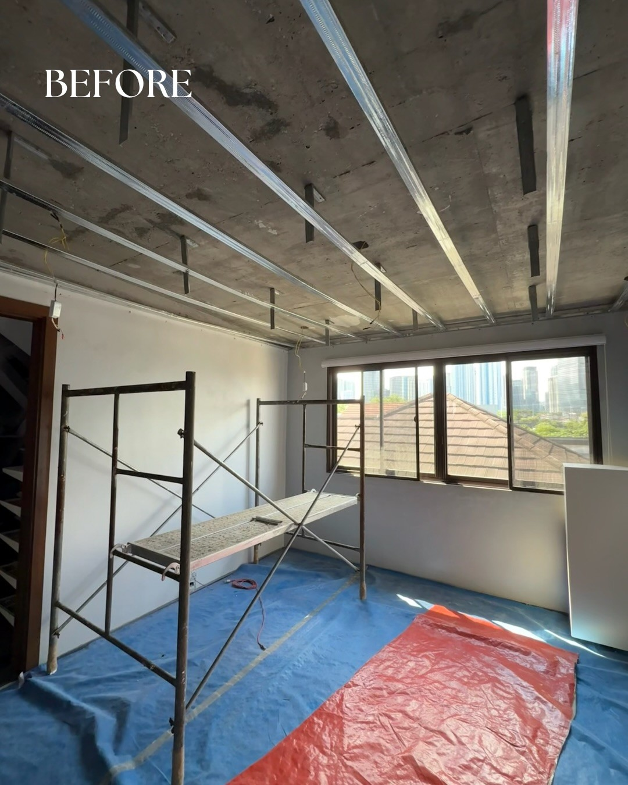
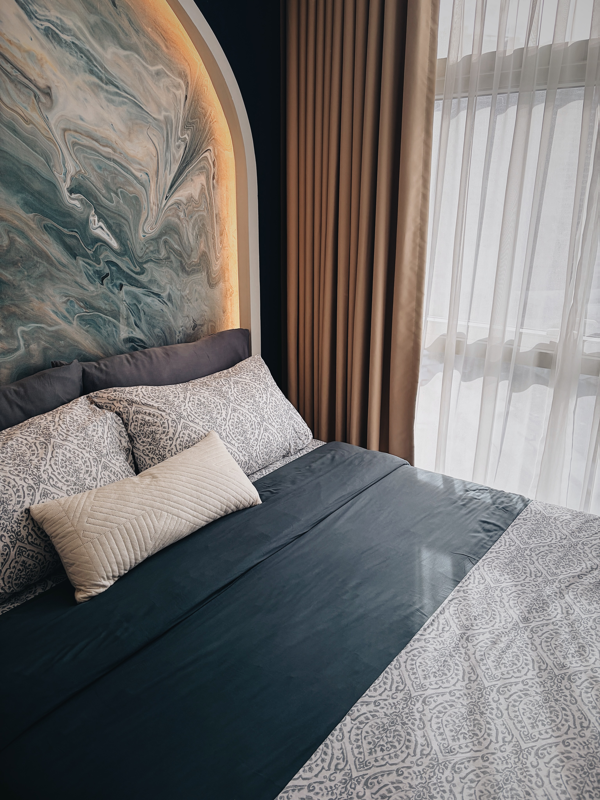
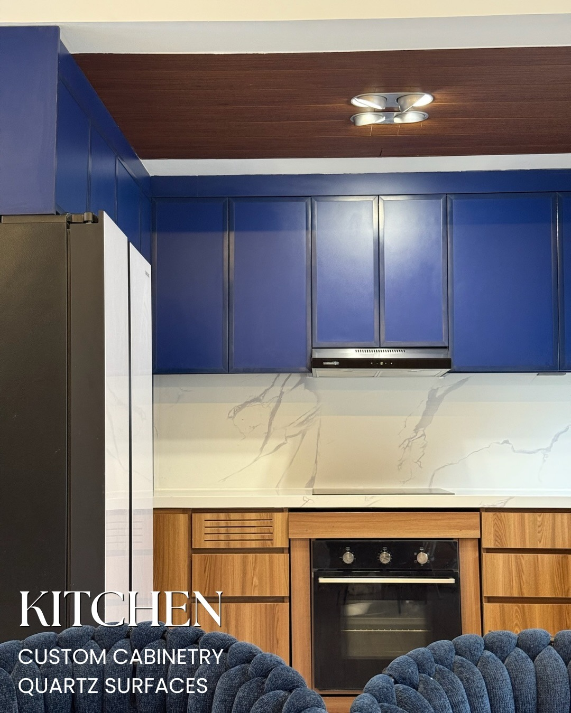
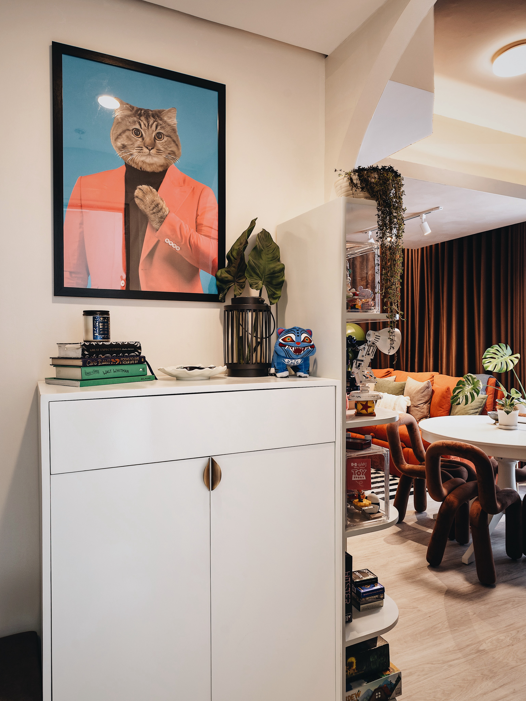

Residential interior · Taguig
Where personality
found its place.
Warm colour, expressive objects, and sculptural lines turn a compact city home into a deeply personal retreat.
Quezon City · Metro Manila
Thoughtful spaces, shaped around the way you live, work, and gather.
Now booking select 2027 projects

What we believe
Prima brings design thinking, technical discipline, and human care into one considered process—from the first conversation to the final detail.
See how we workSelected transformations · 2025—2026
Residential interior · Taguig
Warm colour, expressive objects, and sculptural lines turn a compact city home into a deeply personal retreat.
Turnkey styling · Taguig
Layered light, olive upholstery, and custom details create a calm place for everyday rituals.
The transformation
One residence, documented during construction and after completion—shown as distinct views because the original photographs were taken from different positions.

Our capabilities
Creative and technical decisions stay connected from concept through construction and styling.
Space planning, architectural concepts, technical drawings, and material direction.
Imagine the right spaceConstruction management, engineering coordination, fit-out, and quality control.
Make it real, properlyInterior detailing, custom millwork, lighting, furniture, and final styling.
Complete the experience
Materiality
“The details are not the details. They make the space.”
Texture, tone, light, and joinery are treated as one composition—not a list of finishes.

The Prima method
A considered process keeps expectations, decisions, and construction moving together.
Talk through your projectWe listen, visit the space, and define what success should feel like.
Ideas become layouts, visuals, specifications, and an aligned project direction.
Our team coordinates trades, quality, timing, and communication on site.
Final layers, styling, and careful turnover bring the whole story together.

The studio
Prima Construk is a Quezon City design-and-build studio guided by three simple values: personal attention, integrity in every decision, and genuine care for how people experience a space.
Start a project
Tell us about your space directly where you already chat. Choose Messenger or Instagram and start a conversation with the Prima team.